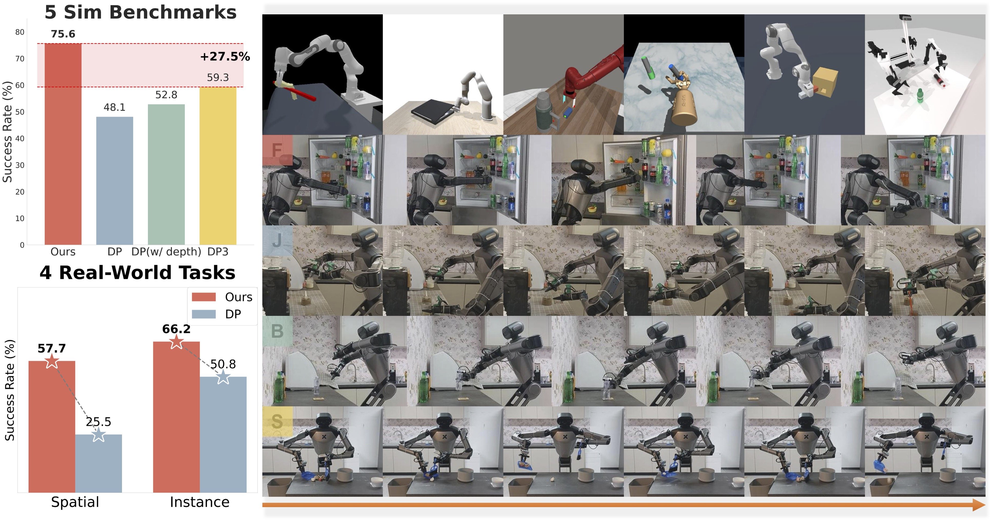

1 Tsinghua University IIIS, 2 Shanghai Qi Zhi Institute, 3 Shanghai AI Lab, 4 Harbin Institute of Technology
Overview
H3DP is a novel visuomotor learning framework that explicitly incorporates hierarchical structures to strengthen the integration between visual features and action generation. H3DP can not only achieve superior performance across 44 tasks on 5 simulation benchmarks, but also handle long-horizon challenging manipulation tasks in cluttered real-world scenarios.
Abstract

Visuomotor policy learning has witnessed substantial progress in robotic manipulation, with recent approaches predominantly relying on generative models to model the action distribution. However, these methods often overlook the critical coupling between visual perception and action prediction. In this work, we introduce Triply-Hierarchical Diffusion Policy (H3DP), a novel visuomotor learning framework that explicitly incorporates hierarchical structures to strengthen the integration between visual features and action generation. H3DP contains 3 levels of hierarchy: (1) depth-aware input layering that organizes RGB-D observations based on depth information; (2) multi-scale visual representations that encode semantic features at varying levels of granularity; and (3) a hierarchically conditioned diffusion process that aligns the generation of coarse-to-fine actions with corresponding visual features. Extensive experiments demonstrate that H3DP yields a +27.5% average relative improvement over baselines across 44 simulation tasks and achieves superior performance in 4 challenging bimanual real-world manipulation tasks.
Method
H3DP employs three hierarchical structures to enhance the policy's understanding of visual input and predict more accurate action distributions:
(1) Depth-aware Layering discretizes the RGB-D image intro multiple layers to improve the policy's ability to distinguish and interpret foreground-background variations
(2) Multi-Scale Visual Representations, wherein coarse-grained features capture global contextual information, while fine-grained features encode detailed scene attributes;
(3) Hierarchical Action Generation utilizes representations at different scales to generate actions in a coarse-to-fine manner, strengthening the correlation between action and visual representations.
Real World Experiments
In terms of real-world experiments, we choose Galaxea R1 robot as our platform. We design four diverse challenging real-world tasks to evaluate the effectiveness of our method.
Clean Fridge (CF)
Place Bottle (PB)
Sweep Trash (ST)
Pour Juice (PJ)
The first two are short-horizon tasks (about 30s each task), while the last two are long-horizon (about 1min - 1.5min each task). The previous demo videos are at original (1x) speed without clipping or cherry-picking.
H3DP could handle the four tasks with higher success rates compared to baselines.
Generalization
Failure Recovery. H3DP could recover from failure cases by leveraging the hierarchical structure of the diffusion process. For example, in the Sweep Trash (ST) task, robot could recover from failure and succeed in the next attempt.
We deliberately move the debris before robot starts to sweep to test the ability of H3DP to recover from failure cases. The following demo videos are clipped directly from our long-take demos without modification or acceleration (1x speed).
Disturbance Resistance. H3DP could resist disturbances during the execution of the task. For example, in the Sweep Trash (ST) task, we randomly put debris during the process of sweeping to disturb, H3DP somehow could manage to finish the task. The following demo videos are clipped directly from our long-take demos without modification or acceleration (1x speed).
Spatial Generalization. H3DP shows ability in spatial generalization. For example, in the Place Bottle (PB) and Clean Fridge (CF) task, we put the bottle or coaster in different positions to test the spatial generalization ability of H3DP. The following demo videos are clipped directly from our long-take demos without modification or acceleration (1x speed).
Instance Generalization. H3DP could deal with different objects. For example, in the Place Bottle (PB) task, we put different bottles and coasters to test the instance generalization ability. The following demo videos are clipped directly from our long-take demos without modification or acceleration (1x speed).
Simulation Experiments
To sufficiently verify the effectiveness of H3DP, we evaluate H3DP on 5 simulation benchmarks, with a total of 44 tasks. The results are shown in the table, with some task examples displayed.
Entire Success Rates. We present the simulation results for each task in the following. For each experiment, we report the average success rate over 3 different random seeds. The final average result is obtained by averaging across all benchmarks.
Training Curve. We also provide the training progress of 4 algorithms on 12 various tasks across 3 different benchmarks. The selected tasks span a range of difficulties and are included without cherry picking to provide an unbiased view of each algorithm.
Raw Videos
Original videos. We provide the original videos of the four tasks. Given the raw videos are too long, we apply different acceleration.